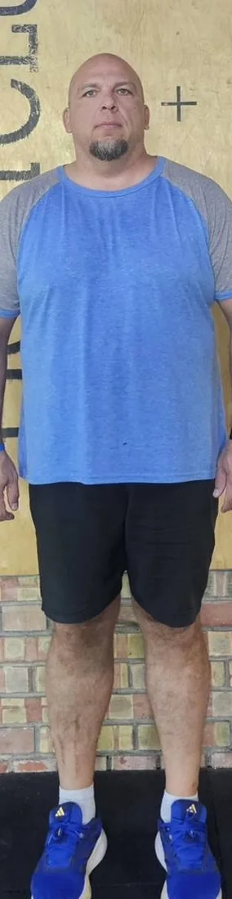

Трансформации
Трансформации из нашего расширенного сообщества, опубликованы с их согласия. Результаты у каждого разные.

05−31 кг · 5,5 месяца
Перетащите линию или выберите её и используйте стрелки. Слева до, справа после.
Бок о бок.
Результаты варьируются от человека к человеку в зависимости от отправной точки, последовательности, питания, образа жизни и других индивидуальных факторов. Эти изображения отражают личный опыт людей из расширенного сообщества и не являются гарантией аналогичных результатов.
Стена результатов.
В клубе на Strada Sevastopol 24 распечатанные пары фото из расширенного сообщества висят на одной стене. Приходите посмотреть вблизи.
Подробные истории клиентов.
"I've been feeling much better since I started, and the community feels like a group of friends, not a typical nutrition place."
"Gabriel genuinely wants to help, not just sell. I use the shakes consistently and have more energy through the day."
"Zero pressure. I left with a much better understanding of my health and started seeing noticeable improvements."
"The test gave me a clear starting point and Gabriel built a realistic plan with me. I've been coming ever since."
Результаты варьируются от человека к человеку в зависимости от отправной точки, последовательности, образа жизни и других индивидуальных факторов. Истории выше отражают личный опыт клиентов и не являются гарантией аналогичных результатов.
Читать отзывы в Google →Начните свою историю.
Первый визит бесплатный. Приходите, измерьте показатели, поймите, где вы находитесь.